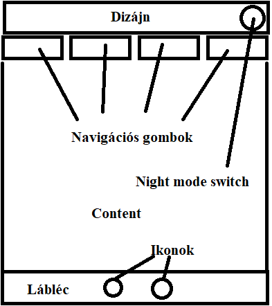
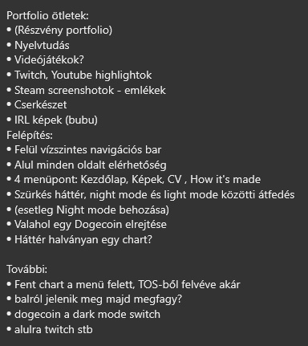

A kezdeti tervek
A honlap tervezésénél próbáltam úgy összerakni a tervemet, hogy az igényes és átlátható legyen. A legtöbb amatőr honlapnak és általában a prezentációk hibája az, hogy nem olvashatóak a szövegek, és zsúfoltak. Ezt próbáltam elkerülni, bár nem érzem úgy, hogy 100%-osan sikerült volna.
 Mint látható az eredeti vázlatomon, a dizájn tervek nagy részének sikerült megvalósulnia. A háttér, a lábléc terv szerint készült el, viszont voltak dolgok amikben nehézségekbe ütköztem, ezt lentebb kifejtem.
Az alap felépítés
Fejléc
A design alapján építettem fel a honlapot. A navigációs gombokkal kezdtem, ám itt máris problémába jutottam. Úgy gondoltam először, hogy kis téglák lesznek a gombok, de ezután inkább csak lebegő szövegek maradtak. Így is dizájnosnak érzem, a mögötte lévő chart-tal, és nem nehéz egy felhasználónak ezeknek a használata sem. Eredeti tervben szerepel még, hogy balról indul a chart majd szépen végigér és megfagy, de ezt nem tudtam rendesen felvenni, így ez kimaradt.
Itt elvetettem a night-mode ikonját, inkább úgy gondoltam az majd a láblécen kap helyet. A további láthatóságért árnyékot adtam a szövegnek, így még felhasználó-barátabb.
Középső "content" rész
A háttér színe tudtam, hogy szürkés akar lenni de amikor ezt beállítottam valahogy üresnek hatott az egész weboldal. A jegyzetemben már szerepelt, hogy a háttérben megjelenjen egy chart, így kipróbáltam a dolgot és szerintem nagyon jól hat az oldalra. Kissé megtöri az üres hátteret, de mégis szolid és nem zavaró, számomra a tökéletes háttér.
Lábléc
A láblécet viszonylag könnyen tudtam elkészíteni, viszont abba a problémába futottam hogy nem tudtam mit helyezzek rá. A twitch és a night-mode switch-en kívűl nem volt semmi, ami úgy éreztem ide illene így eléggé üresnek sikerült, de úgy érzem kell, mivel keretet ad a honlapnak.
A továbbiakban a kezdőlapon okozott fejfájást ez a döntés.
Az oldalak
Kezdőlap
A kezdőlap tervezésénél gondolkodásba estem, hogy milyen is lenne egy jó kezdőlap. Gondoltam legyen érdekes és figyelemfelhívó, így összevágtam egy kisebb videót, amit kissé leszürkítettem, hogy ne legyen olyan kontrasztos. Ezután ráraktam egy kisebb feliratot.
Itt probléma volt a videó méretezése, ha mozgatjuk az ablakot. Ezt eléggé nehezen sikerült kiküszöbölni, pedig egy egyszerű problémáról volt szó. Így sem lett tökéletes, de legalább már nem lehet görgetni, és a lábléc is folyamatosan látszik akárhol járunk az oldalon.
Rólam
Ez az oldal eléggé egyszerűre sikerült, de nem is terveztem rá több dolgot. Beszúrtam egy képet magamról, és írtam egy rövid jellemzést. A szöveget direkt raktam balra-igazítottra és húztam be kissé a közepe felé, mivel így úgy érzem olvashatóbb a dolog.
Munkáim
Ezen az oldal lenne a portfólió középpontja, ám sajnos én nem vagyok kreatív lélek, így ide sok mindent nem tudtam beszúrni. Amire gondoltam, hogy fényképeket, esetleg videókat fogok felrakni régi emlékekről, főleg játékokból.
Egy "táblázat" rendszert hoztam létre, amibe beszúrtam a fényképeket és videókat, így egész átláthatóan sikerült. Megcsináltam, hogy automatikusan váltson oszlop-számot ha lecsökken az ablak mérete, hogy még felhasználó orientáltabbá válljon.
Továbbá hogy ne csak kis képeket lássunk, ha rárakjuk az egeret valamelyikre akkor kilebegnek 1.75x nagyításban, szerintem így már jól használható ez az oldal is.
Végül összevágtam az oldal tetejére egy videót is, úgyis régen csináltam ilyet :)
További nehézségek
Főbb nehézséget okozott az oldal alapjának felépítése. HTML kódot még nem láttam, így nehéz volt először átlátni. Segítségemre voltak a gépész-informatika videók és legfőképpen a www.w3schools.com weboldal, így szépen lassan megértettem hogy mi is folyik itt.
Konklúzió
Összességében én úgy érzem, hogy egész jól sikerült az oldal. Van rajta javítani való, viszont felhasználó barát, és talán nagyjából látványos is. Sajnos nem vagyok egy kreatív lélek, de nekem tetszik :)
Felhasznált oldalak:
www.w3schools.com
www.stackoverflow.com